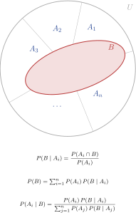
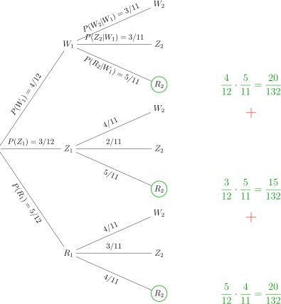
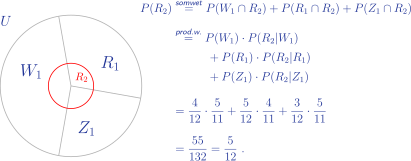

Hoofdstuk 2Voorwaardelijke kansen

Leerplandoelstellingen (GO! Navigator)
Basisvorming (BV3_06)
-
• BV3_06.13 (MD 06.13) De leerlingen bepalen kansen met behulp van kruistabellen, boomdiagrammen en de wet van Laplace.
-
– afbakening: verband tussen relatieve frequentie en kans
-
Gevorderde wiskunde (WD3_06.08)
-
• WD3_06.08.34 De leerlingen bepalen het afhankelijk zijn van gebeurtenissen.
-
– afbakening: voorwaardelijke kans
-
– afbakening: wet van de totale kans, regel van Bayes
-
Extra uitleg: productwet; axioma’s en eigenschappen van voorwaardelijke kansen
I Inleidend voorbeeld
Een medisch team heeft een onderzoek gedaan over het optreden van kleurenblindheid in een bepaalde bevolkingsgroep van 1000 mensen. Hierbij heeft men twee zaken geregistreerd: het geslacht en het al of niet kleurenblind zijn.
De resultaten van dit onderzoek kan je in onderstaande tabel aflezen.
| Kleurenblind K | Niet kleurenblind NK | Totaal | |
| Man M | 32 | 368 | 400 |
| Vrouw V | 6 | 594 | 600 |
| Totaal | 38 | 962 | 1000 |
We kiezen nu willekeurig één proefpersoon uit deze groep en bepalen volgende kansen.
-
(a) \(V\): De gekozen persoon is een vrouw \(\Rightarrow P(V) = \opl {\dfrac {600}{1000}=\dfrac {3}{5}}\)
-
(b) \(K\): De gekozen persoon is kleurenblind \(\Rightarrow P(K) = \opl {\dfrac {38}{1000}=\dfrac {19}{500}}\)
-
(c) \(V\cap K\): De gekozen persoon is een vrouw en is kleurenblind
\[\Rightarrow P(V\cap K) = \opl {\dfrac {6}{1000}=\dfrac {3}{500}}\]
Opmerking Bij deze gewone kansen zijn telkens alle uitkomsten betrokken!
Veronderstel nu dat we zeker weten dat de proefpersoon een vrouw is. We moeten dan enkel nog kijken naar de relevante data, dus enkel bij de rij van de vrouwen. Wat is dan de kans dat ze kleurenblind is? Hiervoor voeren we een nieuwe notatie in:
\(K|V:\) De gekozen persoon is kleurenblind, op voorwaarde dat het een vrouw is
\[\Rightarrow P(K|V) = \opl {\dfrac {6}{600}} = \opl {\dfrac {1}{100}}\]
Opmerking Bij een voorwaardelijke kans is slechts een deel van de uitkomsten betrokken!
Omschrijf met woorden en bepaal nu zelf de volgende kans. Ga na of er een gelijkaardig verband geldt met de gewone kansen zoals hierboven.
\(M|NK :\) De gekozen persoon is een man, op voorwaarde dat hij niet kleurenblind is
\(\Rightarrow P(M|NK) = \opl {\dfrac {368}{962}}\)
II Definitie
In de uitkomstenverzameling U beschouwen we twee gebeurtenissen A en B, waarvan A niet onmogelijk is. De voorwaardelijke kans op B, vooropgesteld dat A zich voordoet, wordt gegeven door
\[ P(B|A) =\frac {P(A\cap B)}{P(A)} \qquad \text { met } P(A)\neq 0. \]
1 Voorbeelden
Zeg telkens om welke kans het gaat en bereken de kans.
-
(a) \(P(M \cap K):\) Kans dat de persoon een man is én kleurenblind is.
\(P(M \cap K)=\opl {\dfrac {32}{1000}=\dfrac {4}{125}}\) -
(b) \(P(M|K):\) Kans dat de persoon een man is, op voorwaarde dat hij kleurenblind is.
\(P(M|K)=\opl {\dfrac {32}{38}=\dfrac {16}{19}}\) -
(c) \(P(K|M):\) Kans dat de persoon kleurenblind is, op voorwaarde dat hij een man is.
\(P(K|M)=\opl {\dfrac {32}{400}=\dfrac {2}{25}}\)
2 Gevolg: Productwet
\[ P(A\cap B) =P(A)\cdot P(B|A) \]
Deze productwet kan uitgebreid worden voor drie (of meer) gebeurtenissen.
\[ P(A \cap B \cap C) =P(A)\cdot P(B|A)\cdot P(C|A \cap B) \]
III Axioma’s en eigenschappen
Een voorwaardelijke kans is nog steeds een kans. Volgende axioma’s en eigenschappen van gewone kansen blijven dus gelden.
1 Axioma A1
\[ P(B|A) \in \mathbb {R^+} \qquad \text { en }\qquad 0\leq P(B|A)\leq 1 \]
2 Axioma A2
\(U|A\) is de zekere gebeurtenis.
\[ P(U|A)=1 \]
Bewijs
3 Axioma A3: Somwet voor voorwaardelijke kansen
\[ B \cap C = \varnothing \Rightarrow P((B\cup C)|A)=P(B|A)+P(C|A) \]
Bewijs
IV Oefeningen
Uit het handboek Van Basis tot Limiet, Combinatoriek en Kansrekening: nrs. 3, 12 en 19 p.139.
V Wet van de totale kans
1 Voorbeeld
In een bakje liggen vier witte, drie zwarte en vijf rode knikkers. We trekken hieruit één knikker en leggen hem niet terug. Daarna trekken we een tweede knikker.
Bepaal de kans dat de tweede knikker rood is.
\(W_i, Z_i, R_i:\) \(i\)-de knikker is respectievelijk wit, zwart of rood
Om deze kans te berekenen, kunnen we op twee manieren te werk gaan.
-
• We maken een kansboom.

\[ \Rightarrow P(R_2)=\dfrac {20}{132}+\dfrac {15}{132}+\dfrac {20}{132}=\dfrac {55}{132}=\dfrac {5}{12} \]
-
• We passen een combinatie toe van de somwet en de productwet.

2 Wet van de totale kans
We gaan uit van een eindig aantal gebeurtenissen \(A_1, A_2, ..., A_n\)
• die elkaar twee aan twee uitsluiten: \(i\neq j \Rightarrow A_i\cap A_j =\varnothing \) (1)
• waarvan de unie de uitkomstenverzameling \(U\) is: \(A_1\cup A_2\cup ... \cup A_n = U\) (2)
• die elk een kans verschillend van nul hebben: \(P(A_i)\neq 0\) (3)
Dan geldt voor een willekeurige gebeurtenis \(B\)
\(P(B)=P(A_1)\cdot P(B|A_1)+ P(A_2)\cdot P(B|A_2)+...+P(A_n)\cdot P(B|A_n)\)
Bewijs
\(\begin {aligned} B &= U \cap B \\ &\overset {\text {(2)}}{=} (A_1 \cup A_2 \cup \dots \cup A_n) \cap B \\[2ex] &= (A_1 \cap B) \cup (A_2 \cap B) \cup \dots \cup (A_n \cap B) \\[0.5cm] \Rightarrow P(B) &\overset {(1)}{=} P(A_1 \cap B) + P(A_2 \cap B) + \dots + P(A_n \cap B) \\[2ex] &\overset {\text {\color {myred}prod.wet}}{=} P(A_1) \cdot P(B|A_1) + P(A_2) \cdot P(B|A_2) + \dots + P(A_n) \cdot P(B|A_n) . \end {aligned}\)
Opmerking: (3) wordt impliciet gebruikt in de product wet.
VI Wet van Bayes
We werken onder dezelfde voorwaarden als bij de wet van de totale kans.
Indien de voorwaardelijke kans \(P(B|A_i)\) gekend is en \(P(A_i|B)\) is gevraagd, kunnen we als volgt te werk gaan.
Definitie voorwaardelijke kans \(P(A_i|B)=\frac {P(A_i\cap B)}{P(B)}\)
Productwet
\[ \Rightarrow P(A_i|B)=\frac {P(A_i)\cdot P(B|A_i)}{P(B)} \]
Wet van de totale kans
\[ \Rightarrow P(A_i|B)=\frac {P(A_i)\cdot P(B|A_i)}{P(A_1)\cdot P(B|A_1)+ P(A_2)\cdot P(B|A_2)+...+P(A_n)\cdot P(B|A_n)} \]
1 Voorbeeld
ELISA-tests worden gebruikt om donorbloed te onderzoeken op de aanwezigheid van het AIDS-virus. De test detecteert in feite antilichamen, stoffen die door het lichaam worden geproduceerd wanneer het virus aanwezig is.
Als er antilichamen zijn, is ELISA positief met kans 0.997 en negatief met kans 0.003.
\(A:\) “er zijn antilichamen”
\(N:\) “ELISA is negatief”
\(\overline {N}:\) “ELISA is positief”
\[ \Rightarrow \qquad P(\overline {N}\mid A)=0.997 \qquad \text {en}\qquad P(N\mid A)=0.003. \]
Indien het onderzochte bloed niet met AIDS-antilichamen is besmet, is de kans dat ELISA een positief resultaat geeft gelijk aan 0.015 en de kans op een negatief resultaat 0.985.
\[ P(\overline {N}\mid \overline {A})=0.015 \qquad \text {en}\qquad P(N\mid \overline {A})=0.985. \]
(Omdat ELISA tot doel heeft het AIDS-virus buiten de bloedbanken te houden, is de betrekkelijk grote kans (0.015) op een foutief positief antwoord acceptabel t.o.v. de geringe kans (0.003) op het niet herkennen van besmet bloed.
Deze kansen zijn afhankelijk van de deskundigheid van het laboratorium dat de tests uitvoert.)
Veronderstel dat \(1\%\) van een grote populatie de AIDS-antilichamen in het bloed heeft.
-
(a) Bereken de kans dat ELISA voor een willekeurig gekozen persoon uit deze populatie een positief resultaat laat zien.
\[ P(A)=\frac {1}{100}=0.01 \qquad \Rightarrow \qquad P(\overline {A})=0.99 \]
\[ P(\overline {N}\mid A)=0.997,\qquad P(\overline {N}\mid \overline {A})=0.015 \]
\(\seteqnumber{0}{}{0}\)\begin{align*} P(\overline {N}) &=P(\overline {N}\cap A)+P(\overline {N}\cap \overline {A})\\ &=P(A)\,P(\overline {N}\mid A)+P(\overline {A})\,P(\overline {N}\mid \overline {A}) \quad \text {(totale kans)}\\ &=0.01\cdot 0.997 + 0.99\cdot 0.015\\ &=0.00997+0.01485\\ &=0.02482. \end{align*}
\[ \boxed {P(\overline {N})=0.02482 \approx 2.48\%} \]
-
(b) Bereken de kans dat iemand antilichamen heeft, gegeven dat ELISA positief was.
We zoeken \(P(A\mid \overline {N})\) met Bayes, waarbij \(\overline {N}\) = ELISA positief.
\(\seteqnumber{0}{}{0}\)\begin{align*} P(A\mid \overline {N}) &=\frac {P(A\cap \overline {N})}{P(\overline {N})} \quad \text {(Bayes)}\\ &=\frac {P(A)\,P(\overline {N}\mid A)}{P(\overline {N})} \quad \text {(productregel)}\\ &=\frac {0.01\cdot 0.997}{0.02482}\\ &=\frac {0.00997}{0.02482}\approx 0.4017. \end{align*}
\[ \boxed {P(A\mid \overline {N})\approx 0.4017 \approx 40.17\%} \]
VII Oefeningen
Uit het handboek Van Basis tot Limiet, Combinatoriek en Kansrekening: nrs. 30, 37, 40, 48, 51 p.139 en volgende.
VIII Statistisch (on)afhankelijke gebeurtenissen
1 Voorbeeld 1
Een medisch team onderzoekt het al of niet geı̈nfecteerd zijn door een bepaald virus in een bevolkingsgroep van 1000 mensen, waarvan 400 mannen en 600 vrouwen.
De resultaten van dit onderzoek kan je in onderstaande tabel aflezen.
| Geı̈nfecteerd \(G\) | Niet Geı̈nfecteerd \(\overline {G}\) | Totaal | |
| Man \(M\) | 100 | 300 | 400 |
| Vrouw \(V\) | 150 | 450 | 600 |
| Totaal | 250 | 750 | 1000 |
We vinden:
\[P(G)= \opl {\dfrac {250}{1000}=\dfrac {1}{4} \qquad \mathbf {=}} \qquad P(G|M)=\opl {\dfrac {100}{400}=\dfrac {1}{4}}\]
\[P(M)= \opl {\dfrac {400}{1000}=\dfrac {2}{5} \qquad \mathbf {=}} \qquad P(M|G)=\opl {\dfrac {100}{250}=\dfrac {2}{5}}\]
De twee kansen zijn telkens gelijk aan elkaar. Blijkbaar heeft het geslacht geen invloed op het al of niet geı̈nfecteerd zijn en omgekeerd. We zeggen daarom dat \(G\) en \(M\) onafhankelijke
gebeurtenissen zijn.
Merk op \(P(G\cap M)=\opl [4cm]{\dfrac {100}{1000} = \dfrac {1}{10}} = \opl [4cm]{P(G) \cdot P(M) = \dfrac {1}{4} \cdot \dfrac {2}{5} = \dfrac {1}{10}}\)
2 Voorbeeld 2
We hernemen het voorbeeld van het medisch team dat kleurenblindheid onderzocht bij 400 mannen en 600 vrouwen.
We vinden:
-
• \(P(K)=\opl {\dfrac {38}{1000}=\dfrac {19}{500}}\)
-
• \(P(K|M)=\opl {\dfrac {32}{400}=\dfrac {2}{25}}\)
De twee kansen zijn verschillend van elkaar. Blijkbaar heeft het geslacht invloed op het al of niet kleurenblind zijn. We zeggen daarom dat \(K\) en \(M\) afhankelijke gebeurtenissen zijn.
Merk op \(P(K\cap M)=\opl {\dfrac {32}{1000}=\dfrac {4}{125}} \neq \opl {\dfrac {38}{1000}\cdot \dfrac {400}{1000}=\dfrac {152}{10000}=\dfrac {19}{1250}}\)
3 Definitie (on)afhankelijke gebeurtenissen
A en B zijn onafhankelijk als \(P(A)=P(A|B)\) of \(P(B)=P(B|A)\)
In dat geval geldt de verkorte productwet: \(P(A\cap B)=P(A).P(B)\)
A en B zijn afhankelijk als \(P(A)\neq P(A|B)\) of \(P(B)\neq P(B|A)\)
In dat geval geldt de verkorte productwet niet: \(P(A\cap B)\neq P(A).P(B)\)
IX Oefeningen
Oefening 1
We kiezen willekeurig een getal van \(1\) tot \(12\). Daarbij beschouwen we de volgende gebeurtenissen: \(A\), het getal is even en \(B\), het getal is een drievoud. Onderzoek de (on)afhankelijkheid van \(A\) en \(B\).
We nemen als uitkomstenruimte
\[ \Omega =\{1,2,3,4,5,6,7,8,9,10,11,12\}, \qquad \#\Omega =12. \]
\[ A=\{\text {even}\}=\{2,4,6,8,10,12\}\quad \Rightarrow \quad \#A=6 \]
\[ B=\{\text {drievoud}\}=\{3,6,9,12\}\quad \Rightarrow \quad \#B=4 \]
\[ A\cap B=\{\text {even Ãľn drievoud}\}=\{6,12\}\quad \Rightarrow \quad \#(A\cap B)=2 \]
\(\seteqnumber{0}{}{0}\)\begin{align*} P(A) &= \frac {\#A}{12}=\frac {6}{12}=\frac 12,\\ P(B) &= \frac {\#B}{12}=\frac {4}{12}=\frac 13,\\ P(A\cap B) &= \frac {\#(A\cap B)}{12}=\frac {2}{12}=\frac 16. \end{align*}
Controle:
\[ P(A)\cdot P(B)=\frac 12\cdot \frac 13=\frac 16=P(A\cap B). \]
Dus \(A\) en \(B\) zijn onafhankelijk.
Oefening 2
We kiezen willekeurig een getal van \(1\) tot \(11\). Daarbij beschouwen we de volgende gebeurtenissen: \(A\), het getal is even en \(B\), het getal is een drievoud. Onderzoek de (on)afhankelijkheid van \(A\) en \(B\).
We kiezen uniform uit \(\Omega =\{1,2,\dots ,11\}\), dus \(\#\Omega =11\).
\[ A=\{\text {even}\}=\{2,4,6,8,10\}\ \Rightarrow \ \#A=5 \qquad \Rightarrow \qquad P(A)=\frac {5}{11} \]
\[ B=\{\text {drievoud}\}=\{3,6,9\}\ \Rightarrow \ \#B=3 \qquad \Rightarrow \qquad P(B)=\frac {3}{11} \]
\[ A\cap B=\{\text {even Ãľn drievoud}\}=\{6\}\ \Rightarrow \ \#(A\cap B)=1 \qquad \Rightarrow \qquad P(A\cap B)=\frac {1}{11} \]
Controle op onafhankelijkheid:
\[ P(A)\cdot P(B)=\frac {5}{11}\cdot \frac {3}{11}=\frac {15}{121}\neq \frac {1}{11}=\frac {11}{121}=P(A\cap B). \]
Dus \(A\) en \(B\) zijn afhankelijk.